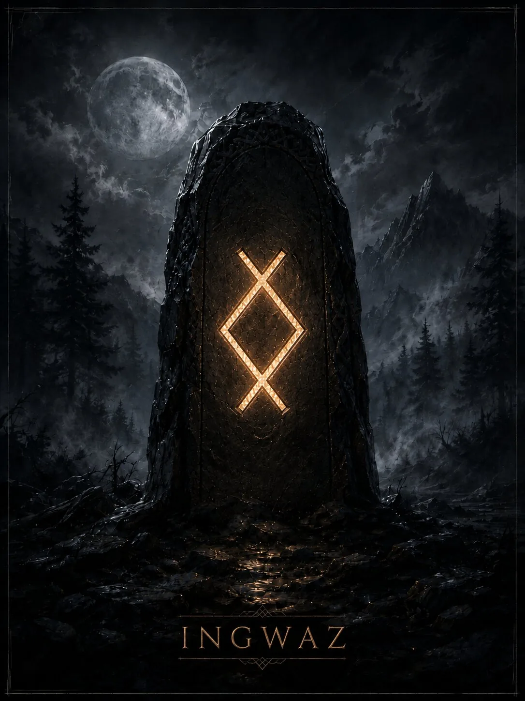

Руна накопленного потенциала, завершения внутренней фазы и высвобождения результата. В современной мантике часто показывает момент, когда процесс уже созрел и должен перейти в новую форму.
Краткая суть
Руна накопленного потенциала, завершения внутренней фазы и высвобождения результата. В современной мантике часто показывает момент, когда процесс уже созрел и должен перейти в новую форму.
Историческая традиция
Имя связано с Ing/Ingwaz, германским божественным или родовым именем; англосаксонская руническая поэма упоминает Ing как фигуру, связанную с движением среди восточных данов. Современная эзотерика развивает образ семени, накопления и плодотворного завершения.
- Ключевые значения: семя, потенциал, завершение, накопление, семья, результат, внутренний рост, высвобождение
Современная мантика
Мантические значения относятся к современной рунической практике.
- Положительное проявление: Созревший потенциал, успешное завершение, освобождение энергии для нового этапа, чувство законченности.
- Негативное проявление: Затянувшееся накопление без выхода, нежелание завершить дело, закрытость в собственной системе.
- Совет: Доведи процесс до точки завершения и освободи место для следующего шага.
- Предупреждение: Накопление имеет смысл только до момента, когда результат нужно выпустить наружу.
- Итог ситуации: Закрытие старого этапа и готовность к новому циклу.
Психологическое состояние
Состояние внутреннего созревания; в тени — закрытость и бесконечное ожидание «идеальной готовности».
Духовное значение
Завершение как необходимая часть творчества: отпустить плод труда и перестать отождествляться с процессом его выращивания.
Прямое и перевёрнутое положение
Мантическая трактовка и работа с перевёрнутыми положениями относятся к современной рунической практике. Для Старшего Футарка не сохранилось древнего руководства, которое задавало бы такой способ гадания как единственно правильный. Ingwaz симметрична; отдельное перевёрнутое положение обычно не используется.
Отличия трактовок разных школ
Связь с Ing исторична, а популярный образ «семени» и функции фиксации результата — современная символическая система.
Итог
Руна накопленного потенциала, завершения внутренней фазы и высвобождения результата. В современной мантике часто показывает момент, когда процесс уже созрел и должен перейти в новую форму.
Финансы
накопленный резерв, завершение инвестиционного этапа, получение результата после периода удержания.
Работа
окончание проекта, сдача результата, переход после долгой подготовки.
Отношения
зрелая связь, желание закрыть неопределённость, перейти к более оформленному состоянию; иногда завершение исчерпавшего себя этапа.
Семья и быт
род, семейная преемственность, завершение домашнего проекта, накопленный запас.
Руна как характеристика человека
Собранный, внутренне ориентированный человек, который долго готовится и действует после созревания решения.
- Мысли: хочет закончить незавершённое и закрыть цикл.
- Чувства: глубокие, удерживаемые внутри до момента готовности проявиться.
- Действия: завершит, зафиксирует результат, освободится от старой задачи и перейдёт дальше.
Современное магическое значение
Это современная эзотерическая практика, а не исторически подтверждённая традиция.
- Современная магическая трактовка: накопление, закрепление, созревание и выпуск результата.
- Задачи: доведение дела до завершения, сохранение потенциала до нужного момента, семейные и созидательные темы.
- Усиливает: концентрацию потенциала и завершённость.
- Ослабляет: распыление и незакрытые хвосты.
- Риск: чрезмерно зафиксировать процесс и затянуть момент выхода результата.
Руна в формулах и ставах
Ingwaz используют как «контейнер» или финальную фиксацию: Fehu+Ingwaz — накопить ресурс; Berkano+Ingwaz — созревание нового; Ingwaz+Dagaz — завершение с переходом в новый этап.
Эзотерическая трактовка
В современной эзотерической трактовке
В диагностике Ingwaz обычно не является прямым индикатором негативного воздействия; в напряжённом контексте может показывать замкнутый, накопленный и долго неразрешаемый процесс.
Возможное бытовое объяснение
Альтернативное объяснение
Бытовая альтернатива: незавершённые дела, подавленные решения, накопленные обязательства или привычка откладывать финальную точку.
Характерные сочетания
- Ingwaz + Dagaz: завершение и резкий новый старт.
- Ingwaz + Berkano: созревание и рост.
- Ingwaz + Fehu: накопленный материальный резерв.
Руна в формулах и ставах
Ingwaz используют как «контейнер» или финальную фиксацию: Fehu+Ingwaz — накопить ресурс; Berkano+Ingwaz — созревание нового; Ingwaz+Dagaz — завершение с переходом в новый этап.
Мантические, магические и диагностические значения относятся к современной рунической практике. Историческая часть опирается на рунические поэмы и эпиграфику. Материалы носят справочный и развлекательный характер.